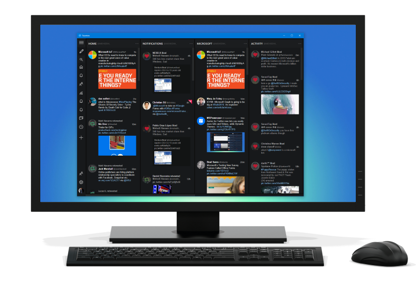

Toggle navigation
Features
Blog
Download
Follow us
Tweeten
Introducing Tweeten, an app that makes TweetDeck prettier on
Windows.
OS X.
Linux.
Tweeten offers a cleaner, faster and simpler TweetDeck experience while keeping all the features TweetDeck you love.
Get it now
